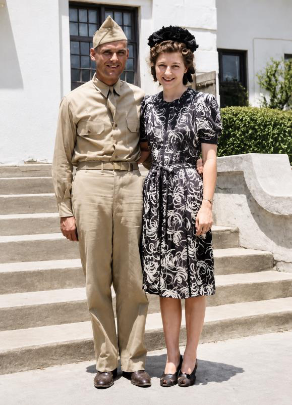
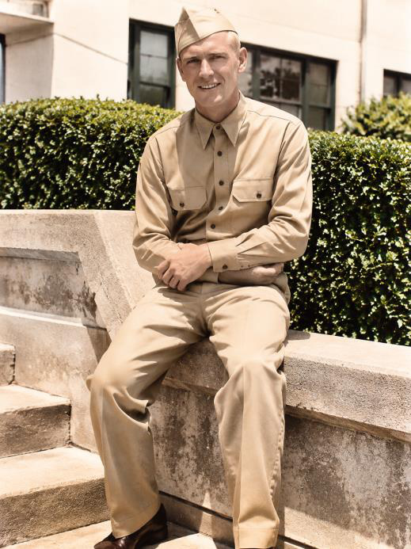

My father loved his country. I want that understood before anything else in this chapter, because a man who refuses to carry a weapon in wartime can be misunderstood, and my father was never a man who ran from anything.
What he could not do was kill. He had given his life to Jesus Christ at nineteen, and he took the words of Jesus seriously, all of them, including the hard ones. So when the Army called, he did not hide, and he did not leave. He asked to serve in the one way his conscience would allow: as a medic, with bandages instead of bullets.
Permission from the Church
In those days a man could not simply declare himself a conscientious objector. He needed the backing of his church. My father applied for conscientious objector status through the Church of God, the movement headquartered in Anderson, Indiana, which in many cases took a pacifist view of war. He then had to stand before an examination that tested whether his convictions were real.
He passed. The Army made him an official conscientious objector and assigned him to medical training as a medical technician with a combat engineer outfit, the 121st Engineer Battalion, as I recall it.
I have to be honest about what I can prove. The Army’s records for my father were lost in the great fire at the records center in St. Louis, which destroyed about eighty percent of the Army’s personnel files for men who left the service between 1912 and 1960. What I know about his early service comes from him.
The Blackout
My father’s outfit was preparing to ship out for Europe, and it had gathered in New York City. His commanding officer was what my father called gung ho. He wanted his men hard and ready, and he was not shy about showing it.
This was early in the war, when German U-boats were hunting merchant ships along the East Coast. A ship lit against the shoreline made a perfect silhouette for a submarine commander looking for a target. So the coast was kept dark, and the Army trained its men to move in the dark. There was a blackout in effect in New York City.
One night the commanding officer took his men out onto the street under blackout conditions. My father marched in the road with his platoon, near his company commander. Nobody could see. A patrol car was coming down that same road at fifty-five or sixty miles an hour, with no headlights.
It hit my father and his company commander.
The commander was killed instantly. My father was thrown twenty feet through the air. When he came down his leg was broken and his head had struck the ground hard enough to cause a severe brain concussion. I do not know the commander’s name, and with the records gone I have never been able to learn it. He gave his life that night, and I want him remembered.
My sister Lorae spent many hours talking with our father in the years he lived with her. She remembers the story of the blackout and the seriousness of his head injury, and I hope she will tell more of it.
Two Spinal Taps
At the hospital the doctors set his leg in a cast. Then they noticed what worried them more: his head was swelling, until it had grown to twice its normal size. The pressure of the fluid was dangerous, and the only way they had to relieve it was by draining it. My father endured two spinal taps.
He lived. It took him six to eight months to recover fully before the cast came off and he could go back on active duty. I have often thought about those months. He was a young husband with a wife and an infant son far away, lying in a hospital bed, and the men he had trained with were moving on without him.
A photograph from June 13, 1943, shows my parents together in Hot Springs, Arkansas, my father in uniform, my mother in a flowered dress, both of them smiling. It is one of the few pictures of them from the war years, and I treasure it.

But the accident did something else, though nobody could see it then.
When he was released from the hospital, the Army did not send him back to his old outfit, which had already sailed for Europe. He was reassigned to the Ninth Air Force. My father always called it a blessing in disguise, and by the end of this book I think you will agree. I will tell you why when we reach Normandy.
I want to say something here to anyone who is carrying a disaster they do not understand. Sometimes the thing that knocks us flat is the thing that moves us out of the way of something worse. I know this to be true because I have lived it myself. My father lived it first.
A Sergeant
In his new unit my father went back to his training, and this time he excelled. He learned how to apply a tourniquet to stop a bleeding limb, how to use direct pressure, how to suture a wound and dress it with bandages, and how to surgically remove shrapnel and bullet fragments. His commanding officer was, in my father’s words, extremely impressed with his skill. He was promoted to sergeant.

Then came the ship. My father boarded the Queen Mary, crowded with thousands of other soldiers, and sailed for England, where the Allies were preparing to invade Europe.
In England he settled into a base and kept training. He trained other medical technicians too, and he was, by every account I ever heard from men who served with him, exceptionally good at it. Men respected him, and they followed him.
He did not yet know that he would soon be needed far more than anyone could imagine.